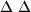

There are a few new operators:
=> is used to specify implications.
& is used for conjucntion.
@ is used to state the time at which a formula is
taken to be true. ,
for instance, expresses that
is
taken to be true at step 10.
? This is a unary predicate which is true if its argument is in
the KB at the time that it is computed.
` THis is similar to ``?'' except that it searches for an
exact match of its aregument in the KB. Unification is not allowed.
: This is used to associate formulas to ``contexts'' or
groupings of formulas. Formulas are grouped together according to
theor purpose. ,
for instance says that
is a beleif
whereas
represents that
is an implicature. The
grouping used are: